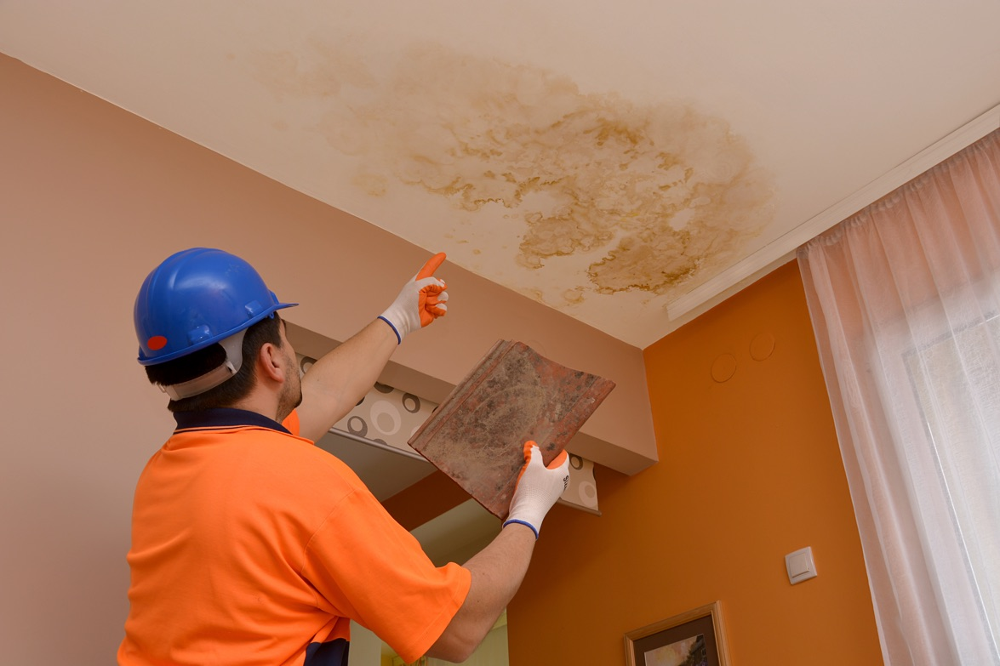

How to Stop Water Leakage From Wall to Ceilings

Are water leaks common? Can people learn how to stop water leakage from wall easily? If you were asking, how to stop water leakage from wall then the answer would be quite clear-yes almost everywhere! Water is a very important commodity that flows freely in our homes and there are several reasons for water leaks from wall which is very hazardous and can cause serious problems. Here, I will share with you some tips on how to stop water leakage from wall securely.
Cracks occur anywhere and
everywhere-it is just normal that we cannot avoid it but this does not mean
that we should not take any measures to prevent it. Water easily seeps into the
ground through small cracks and can cause serious problems at home such as
water damage, mold infestation, and also damp walls. To ensure that your house
remains dry and safe, you should find out how to stop water leakage from wall
before it becomes too late. One of the main causes of water harm comes from the
cracks in the concrete. If these cracks are not fixed timely, it can lead to a
big problem.
You must pay special attention to cracks-filling in or hollowing out concrete. When there is water or moisture, concrete is very flexible and it can easily absorb it. You should immediately fix any hollowed out or filled concrete corners and spaces. If possible, it is better to replace it with new one so that no further water harm comes into your home. If you want to know how to stop water leakage from wall without replacing the damaged part, you can get a hold of professional plumbing contractor to carry out the repairs on your behalf.
To make sure that your house is
waterproof and airtight, you should also keep dirt and debris away from the
area around the house. If you have wet carpeting, it is advisable to vacuum the
carpet frequently and to remove any trace of water or moisture. If you want to
know how to stop water leakage from wall properly, you should first understand
the concept of concrete and how it is used. Concrete is a mixture of Portland
cement, sand, gravel and other materials that form a strong but flexible
material that can withstand pressure and weight. It is used for constructing
walls and other constructions.
Water Leakage From Wall: Once you notice the wall cracking, do not try to fix it on your own because you might end up worsening the situation. Hire a contractor who can carry out wall repairs and ensure that it is done properly. A cracked foundation can cause several problems including pests and structural damages which can cost you heavily.
You may not be able to see the water
damage in time because of its small size. However, once it starts leaking, it
will be obvious. Even if the water is coming from a nearby faucet or a storage
tank, you cannot neglect the problem. The water will eventually fill up the
entire cavity and you will have an endless problem. If the entire slab is affected
by water, you should get rid of it as soon as possible.
To crack a concrete wall, use a high-pressure water jetting system. This system uses water at a very high force to crack the surface and force the water out. Before using this method, make sure that you are hiring a professional service with years of experience doing this job. Professionals have the right equipment to do this job perfectly and they know how to handle the pressure effectively. An aqua Brittanum is a special type of tool to apply on a damaged surface to remove the water from the concrete.
You may not be able to notice a
water leak because of its small size. But once you notice the crack, you must
act fast. The longer you wait, the more difficult and expensive it will be to
fix the damage. The best thing to do in this case is to get a reputable company
to repair the wall for you.